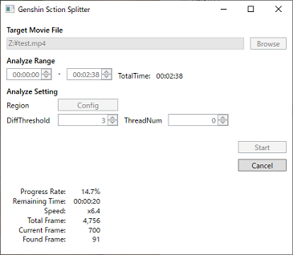

Genshin Time Splitter
This application is designed for elite enemies TA in "Genshin Impact" by HoYoVerse,
analyzing videos and outputting csv/json/xspf/video(optional) files segmented by loading screen times.
You can calculate time efficiency per elite enemy using the output files.

Download / Install
GenshinTimeSplitter_x64.zip Latest Version
- Download from the link above
- Extract the downloaded zip file to any folder
To uninstall, please delete the folder.
Tutorial Video
TODO
How to Use
Important
Due to the mechanics of this app, please use videos with as high a bitrate as possible for analysis.
Using low bitrate videos may significantly increase the chances of incorrect detection results.
Recommended Video Settings
Resolution: 1920x1080
Frame rate: 30fps
Bitrate: At least 10Mbps
Note
If your video falls under the following conditions, settings adjustments are required at [Analyze Setting] -> Region:
・The video has black bars at the top, bottom, left, or right (outside the game screen)
・The game screen has overlays such as timers
Application Usage Instructions
- Select the video to analyze using the [Browse] button.
- Adjust the video timing to analyze with
Analyze Range. - Change the settings in
Analyze Setting(see below). - Press the [Start] button.
Results are outputted in the same folder as the video file.
For how to use the output files, see How to Use the Output Files below.
Analyze Settings
Region
The area analyzed as the loading screen.
If there are black bars above, below, or on the sides of the video (outside the game screen)
If there are overlays such as timers displayed on the game screen
In such cases, you must adjust the area that is recognized as the loading screen.
The area to be set is either completely white or completely black.
{kind=link}
{kind=link}
DiffThreshold
The threshold for recognizing loading screens.
Increasing this value can allow detection even in low bitrate videos.
However, it increases the chance of false detections, so we recommended not to change it.
TheadNum
The number of threads to use for analysis.
If "0", all CPU cores will be used.
Generally, there is no need to change it.
FalseDetection(ms)
The time (in milliseconds) used to determine if a warp is a false detection.
Times shorter than this value will not be treated as a warp.
・If a warp is incorrectly detected when there is no warp
Increase the number.
Note that it is recommended to set the maximum value to 300.
Setting it too high may prevent recognition of normal warps.
・If a warp is not detected when there actually is one
Decrease the number.
Note that it is recommended to set the minimum value to 90.
Setting it too low may cause non-warping areas to be mistakenly recognized as warps.
Output Movie
Determines whether to output a separate video for each warp.
Note
To output videos, FFmpeg must be installed.
You can install it via the "Install FFmpeg" button or by installing it separately.
・OFF
No video will be output.
・ON (Copy / Fast, Not Accurate)
The video is output without re-encoding.
This allows for quick creation, but the first few seconds of footage may be corrupted.
・ON (Re-Encode / Slow, Accurate)
The video is re-encoded and then output.
This requires more machine power and takes longer to create, but the footage will not be corrupted.
Planned Features
- Splitting at the moment the map is opened
License
This project is not affiliated with HoYoVerse. Genshin Impact, game content and materials are trademarks and copyrights of HoYoVerse.